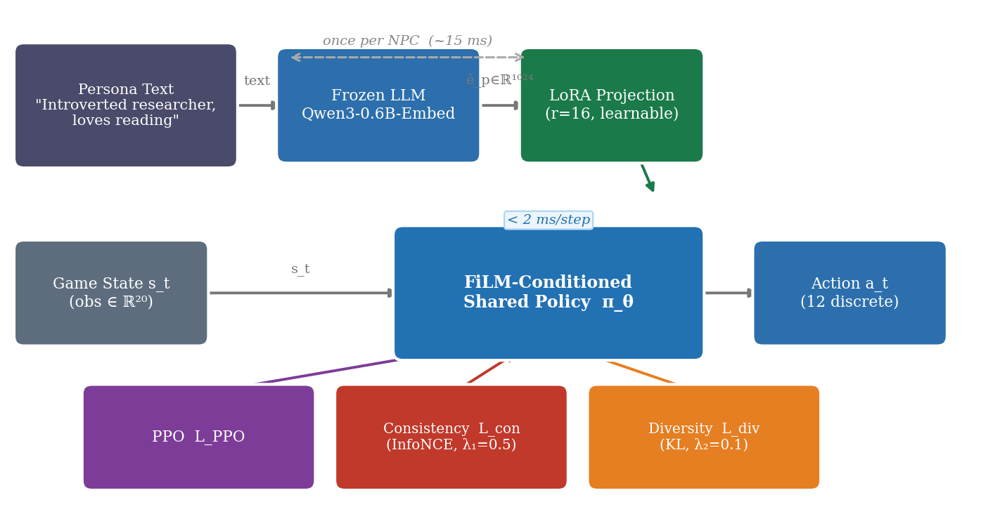
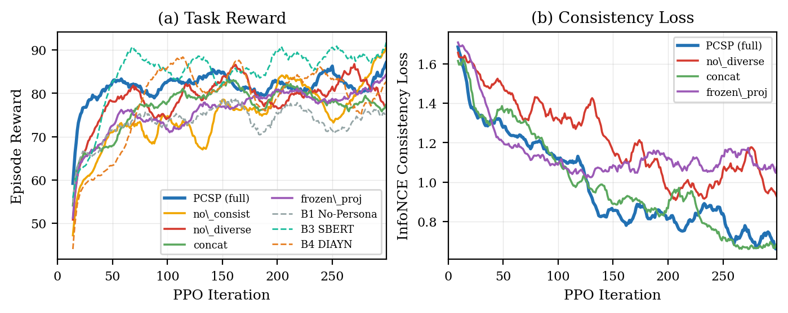
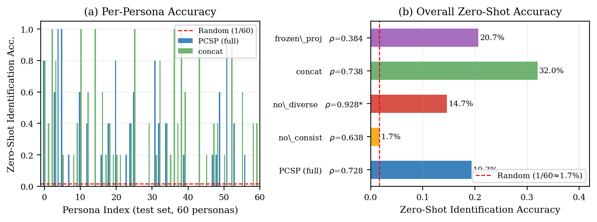
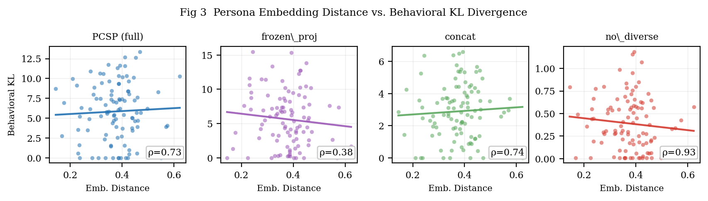

Life simulation games such as The Sims and inZOI demand hundreds to thousands of NPCs that each behave consistently with a distinct personality—across an entire play session, not just in a single dialogue. Industrial solutions today rely on hand-crafted behavior trees, whose authoring cost scales with the NPC count, or fall back to generic stochastic policies that produce no consistent character.
Two natural alternatives face hard scaling walls. One-policy-per-persona RL requires memory and training cost linear in the number of NPCs; deploying 10,000 distinct policies is impractical. LLM-as-policy methods (Ahn et al. 2022; Wang et al. 2023) achieve expressive persona conditioning but call the language model at every step, incurring 200–500 ms latency that conflicts with real-time game loops (target: \(<\)50 ms).
We propose pcsp to close this gap. The key insight is that a frozen LLM encoder computes a once-per-NPC persona embedding; a lightweight FiLM-conditioned policy network then runs at full game speed. The shared policy generalizes to unseen persona texts through the smooth semantic structure of LLM embedding space.
pcsp framework: a single shared RL policy conditioned on LLM persona embeddings via FiLM, supporting unlimited NPCs at constant inference cost.
Co-training objective: joint PPO + InfoNCE consistency + KL diversity loss that prevents behavioral collapse without sacrificing task reward.
Zero-shot generalization: \(11\times\) above-chance trajectory-to-persona identification on 60 unseen personas, with Spearman \(\rho\!=\!0.73\) semantic-behavioral alignment.
Speed advantage: 22\(\times\) faster than LLM-as-policy while maintaining interpretable persona conditioning.
UVFA (Schaul et al. 2015) and HER (Andrychowicz et al. 2017) condition policies on goal states—what to achieve. Persona describes how to behave: two NPCs with the same needs but different personalities should fulfil them via different activity sequences. This distinction renders goal-conditioning ill-suited for NPC characterization.
BabyAI (Chevalier-Boisvert et al. 2019) and LangSAC (Shao et al. 2021) condition on short-horizon natural-language instructions that change episode-by-episode. pcsp instead conditions on persistent personality traits—a fundamentally different temporal regime where the conditioning signal is fixed for the NPC’s lifetime.
DIAYN (Eysenbach et al. 2019) and CIC (Laskin et al. 2022) discover diverse skills via unsupervised latent codes. Learned skills are not human-interpretable; a game designer cannot say “make this NPC introverted” by specifying a latent index. pcsp grounds conditioning directly in natural language, preserving interpretability.
SayCan (Ahn et al. 2022), Voyager (Wang et al. 2023), and ReAct (Yao et al. 2023) invoke LLMs at every decision step, which produces rich persona expression but at latencies (\(>\)200 ms) incompatible with real-time game NPCs. pcsp calls the LLM once per NPC lifetime.
Table 1 summarizes the comparison.
Mini-Inzoi is a PettingZoo AEC life-simulation environment on a 6\(\times\)6 grid with 4 agents, 8 bio/social needs (hunger, sleep, social, leisure, hygiene, fitness, work, learning), and 12 discrete actions (8 activities + 4 movement directions). Observation \(s\!\in\!\mathbb{R}^{20}\): agent position (2), time-of-day (1), current needs (8), and summaries of the three other agents (9). Reward combines needs satisfaction, persona-aligned activity bonuses (\(+0.5\) per preferred action), and social interaction bonuses (\(0.2\!+\!0.3\!\times\!\cos\!\text{-sim}(\text{Big Five}_i, \text{Big Five}_j)\)). Persona dataset: 300 texts generated from 15 Big Five archetypes \(\times\) 20 occupations; split 240 train / 60 test (zero-shot).
Given persona text \(p\), we compute a frozen LLM embedding \(\hat{e}_p = f_{\text{LLM}}(p) \in \mathbb{R}^{1024}\) using Qwen3-0.6B-Embedding (Team 2025) (last-token pooling, L2-normalized). This is computed once per NPC; at 14.6 ms/persona it is negligible. A learned LoRA projection (Hu et al. 2022) (\(r\!=\!16\), \(\text{lr}\!=\!10^{-4}\)) maps \(\hat{e}_p \to e_p \in \mathbb{R}^{64}\): \[e_p = W_{\text{down}}^{\top} \sigma\!\left(W_{\text{up}}^{\top} \hat{e}_p\right),\] where \(W_{\text{up}} \in \mathbb{R}^{1024\times 512}\) and \(W_{\text{down}} \in \mathbb{R}^{512\times 64}\). The projection is necessary because raw Qwen3 embeddings capture occupational similarity more strongly than personality similarity (salesperson\(\leftrightarrow\)executive: 0.61 vs. trainer\(\leftrightarrow\)blogger: 0.33).
The shared policy \(\pi_\theta(a \mid s, e_p)\) is a 3-layer MLP (256-256-10) where each hidden layer \(h_\ell\) is modulated by a FiLM layer: \[h_\ell' = \gamma_\ell(e_p) \odot h_\ell + \beta_\ell(e_p),\] with \(\gamma_\ell, \beta_\ell\!: \mathbb{R}^{64} \to \mathbb{R}^{256}\) being small linear networks. FiLM injects persona information at every hidden layer, preventing the persona signal from being diluted in deep representations. A separate FiLM-conditioned value network \(V_\phi(s, e_p)\) is used for the critic. Total trainable parameters: 207K (excluding the frozen LLM).
We train with a three-term objective: \[\mathcal{L}_{\text{total}} = \mathcal{L}_{\text{PPO}} + \lambda_1 \mathcal{L}_{\text{consist}} + \lambda_2 \mathcal{L}_{\text{diverse}},\] with \(\lambda_1\!=\!0.5\), \(\lambda_2\!=\!0.1\).
Standard clipped surrogate objective with GAE (\(\gamma\!=\!0.99\), \(\lambda_{\text{GAE}}\!=\!0.95\), \(\epsilon\!=\!0.2\), batch \(=\!2048\)).
A 2-layer GRU trajectory encoder \(g_\phi(\tau) \in \mathbb{R}^{64}\) (hidden \(=\!128\)) maps episode trajectories to embeddings. InfoNCE contrastive loss (Oord, Li, and Vinyals 2018) (temperature \(T\!=\!0.07\)) aligns trajectory embeddings with their originating persona embeddings: \[\mathcal{L}_{\text{consist}} = -\log \frac{\exp\!\left(\tfrac{\text{sim}(g_\phi(\tau),\, e_p)}{T}\right)} {\sum_{p' \in \mathcal{B}} \exp\!\left(\tfrac{\text{sim}(g_\phi(\tau),\, e_{p'})}{T}\right)}.\] This loss prevents the policy from ignoring persona conditioning (i.e. mode collapse).
We maximize the expected KL divergence between the policy distributions induced by different personas at shared states: \[\mathcal{L}_{\text{diverse}} = -\mathbb{E}_{s,\, p \neq p'}\!\left[ D_{\mathrm{KL}}\!\left(\pi_\theta(\cdot \mid s, e_p) \;\|\; \pi_\theta(\cdot \mid s, e_{p'})\right) \right].\] This is computed as a batched forward pass over \(n\!=\!8\) sampled personas at 32 sampled states per update.
A system overview is shown in Figure 1.

All models are trained for 300 PPO iterations (\(\approx\)1.9M environment steps) on an NVIDIA RTX 6000 Ada (49 GB VRAM). The pcsp full model trains in approximately 20 minutes. Baselines: B1 No-Persona PPO (persona-free lower bound); B2 Per-Persona PPO (24 independent policies, data-efficiency upper-bound attempt); B3 SBERT (all-MiniLM-L6-v2, 384-dim, frozen); B4 DIAYN (random 64-dim latent, same FiLM architecture); B5 LLM-as-policy (Qwen3-1.7B, /no_think mode, latency only).
Table 2 shows per-model results on the five primary metrics. pcsp (full) achieves the best balance across persona consistency, zero-shot generalization, behavioral diversity, and inference speed. While B3 (SBERT) achieves slightly higher task reward (86.2 vs. 83.4), it provides no persona consistency or diversity metrics.
| Model | Reward \(\uparrow\) | ||||||
| Acc \(\uparrow\) | |||||||
| Acc \(\uparrow\) | |||||||
| \(\uparrow\) | |||||||
| KL \(\uparrow\) | \(\rho\) \(\uparrow\) | ||||||
| (ms) \(\downarrow\) | |||||||
| pcsp (full) | 83.4 | 0.283 | 0.193 | 6.24 | 5.87 | 0.728 | 1.97 |
| PCSP (no_consist) | 84.3 | 0.008\(^{*}\) | 0.017\(^{*}\) | 1.04\(^{*}\) | 3.78 | 0.638 | 2.03 |
| PCSP (no_diverse) | 76.8 | 0.225 | 0.147 | 4.31 | 0.39\(^{*}\) | 0.928\(^{\dagger}\) | 1.79 |
| PCSP (concat) | 77.4 | 0.392 | 0.320 | 8.27 | 2.87 | 0.738 | 1.72 |
| PCSP (frozen_proj) | 83.6 | 0.188 | 0.207 | 2.55 | 5.60 | 0.384 | 1.79 |
| B1 No-Persona | 73.2 | – | – | – | – | – | 1.83 |
| B3 SBERT | 86.2 | – | – | – | – | – | 1.88 |
| B4 DIAYN | 81.9 | – | – | – | – | – | 1.94 |
| B5 LLM-policy | – | – | – | – | – | – | 43.7 |
\(^{*}\)Near-random performance indicating failure mode. \(^{\dagger}\)KL magnitude too small (0.39) for meaningful correlation.

Figure 2 shows reward and consistency loss curves throughout training.
Removing it (no_consist) drives consistency accuracy to near-chance (0.8%, \(11\times\) below full) and zero-shot accuracy to 1.7%—trajectories carry no persona information. The coherence ratio collapses from 6.24 to 1.04, confirming that without this loss all personas produce nearly identical trajectory embeddings.
Removing it (no_diverse) reduces mean KL from 5.87 to 0.39 (15\(\times\) reduction), meaning all personas converge to near-identical action distributions. Task reward also drops (\(-8.5\%\)), suggesting that behavioral diversity improves the policy’s ability to satisfy different needs profiles.
The concat variant achieves higher consistency accuracy (0.392 vs. 0.283) and coherence (8.27 vs. 6.24), but at the cost of task reward (\(-7.0\%\)) and mean KL (\(-51\%\)). The concat architecture exposes persona information only at the input, limiting its effect on deeper representations and collapsing behavioral range.
Freezing the projection (frozen_proj) halves Spearman \(\rho\) (0.384 vs. 0.728), indicating that raw LLM embeddings—which capture occupational similarity more than personality similarity—are not directly suited for behavior conditioning.

Figure 3 shows the per-persona zero-shot identification accuracy for pcsp (full) and the concat ablation across the 60 held-out personas. pcsp identifies 19.3% of unseen personas correctly (random baseline: 1.7%), confirming that the LLM embedding space generalizes to persona texts unseen during training.

Figure 4 plots pairwise behavioral KL divergence against persona embedding cosine distance for pcsp (full) and ablations. pcsp shows a strong monotone trend (\(\rho\!=\!0.728\), \(p\!<\!10^{-17}\)): more dissimilar personas produce more dissimilar behaviors. frozen_proj loses this alignment (\(\rho\!=\!0.384\)), confirming the role of the LoRA projection in bridging LLM and behavior spaces.
We presented pcsp, the first framework that grounds free-form natural language persona descriptions into a single shared RL policy, enabling zero-shot generation of behaviorally distinct yet persona-consistent NPCs at constant inference cost. Key findings: (1) diversity loss is the most critical component for preventing behavioral collapse; (2) FiLM conditioning outperforms simple concatenation in behavioral range; (3) LoRA projection is necessary to align LLM semantic structure with behavior space; (4) the system generalizes to unseen personas at 22\(\times\) the speed of LLM-as-policy baselines.
Mini-Inzoi’s 6\(\times\)6 grid is intentionally minimal; scaling to richer environments (e.g., Melting Pot) is a natural next step. Dynamic personas (mood evolution over time) and hierarchical persona representations are planned extensions. Human evaluation (Prolific, \(n\!=\!30\)) is ongoing and will be included in the final version.
The authors used an NVIDIA RTX 6000 Ada GPU for all experiments.